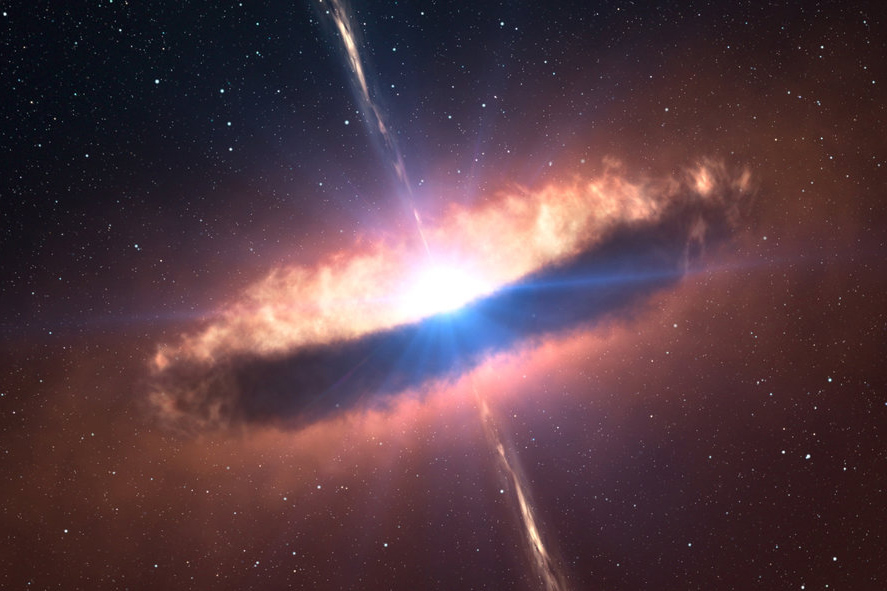
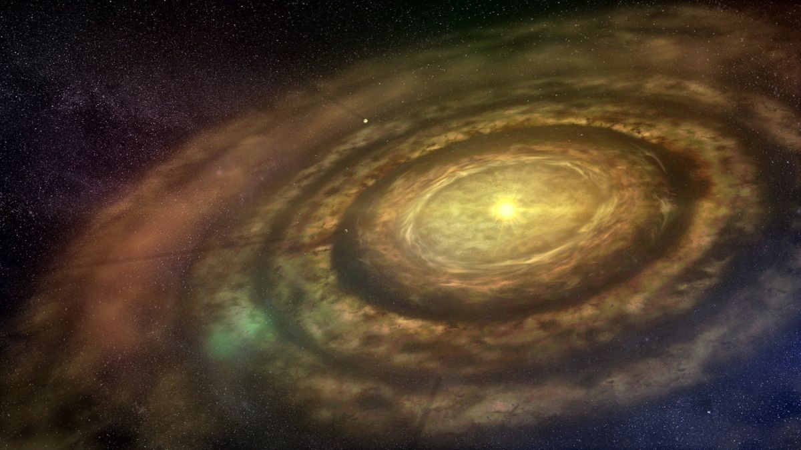

The solar system started out as a massive cloud of gas and dust called the solar nebula. This nebula was made up of hydrogen, helium, and heavire elements produced by earlier generation of stars. The collapse of the nebula might have been triggerd by the shockwave from a nearby supernova explosion, compressing the gas and dust into a denser region.
Formation of the Sun
As the Nebula collasped under its gravity, most of the material was drawn toward the center, forming a protosun. The protsun grew hotter and denser until nuclear fusion began, igniting the Sun and making it the star we know today. The Sun's strong gravitational pull kept the rest of the material in orbit around it.
Creation of the Protoplanetary Disk
The remaining gas and dust flattened into a spinning disk around thte sun, called the protoplantary disk. Withink this disk, particles of dust and ice began to stick together, forming small clumps known as planetesimals.